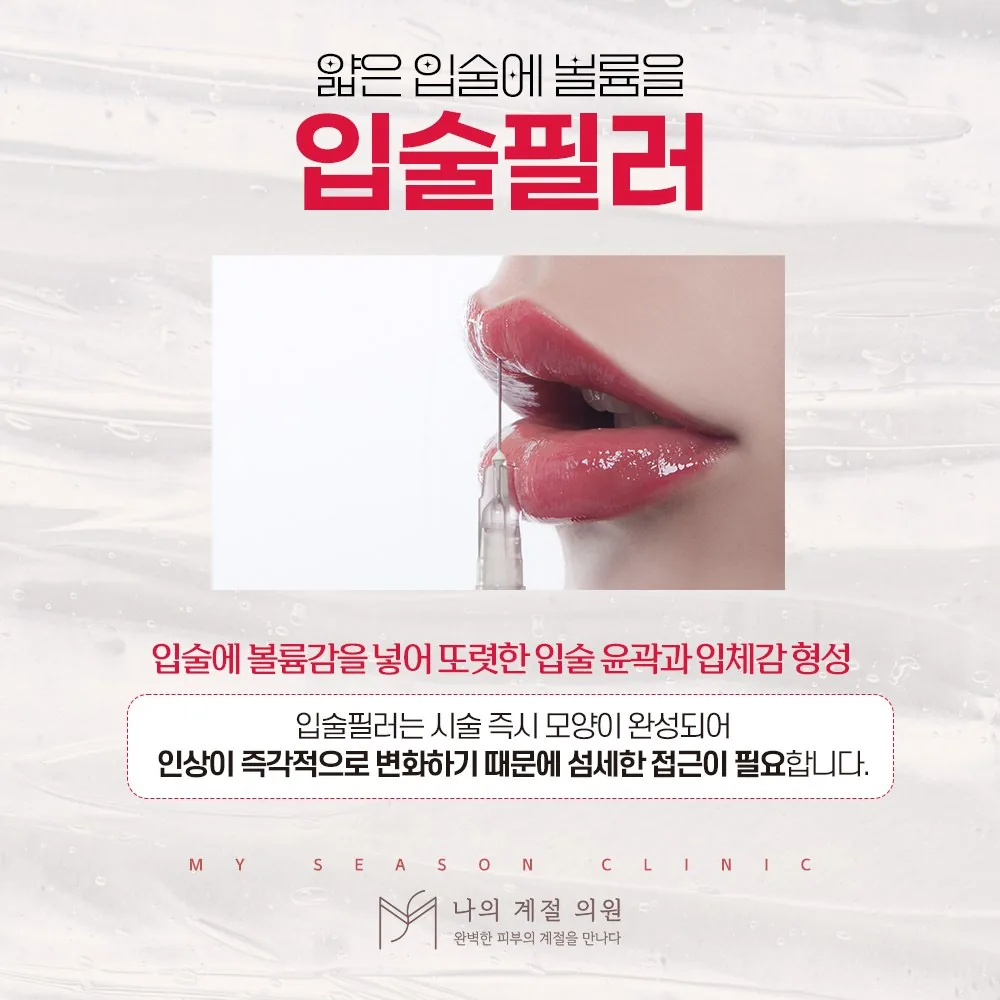

울산입술필러, 두께보다 비율과 움직임을 먼저 보는 이유

입술은 말하고 웃을 때 가장 많이 움직이는 부위입니다. 두께·테두리·비율·좌우 차이를 나누어 설명하고, 정지된 모습이 아니라 움직임까지 보는 상담 기준을 정리했습니다.
입술 고민을 네 가지로 나눠 보세요
“입술이 얇다”는 말 안에는 전체 두께, 입술선의 선명함, 윗입술과 아랫입술의 비율, 좌우 차이가 섞여 있습니다. 사진 속 다른 사람의 입술을 기준으로 삼기보다 내 입술에서 바꾸고 싶은 부분과 유지하고 싶은 부분을 구분해 적어 가면 상담이 구체적이 됩니다.
하나의 정답 비율을 모든 사람에게 맞추지는 않습니다. 인중 길이, 치아 노출 정도, 얼굴 전체의 균형에 따라 어울리는 범위가 다릅니다.
움직일 때의 모양이 중요합니다
입술은 발음과 식사, 표정에 관여하는 부위입니다. 정지된 모습에서는 자연스러워도 웃을 때 경계가 도드라지거나 말할 때 뻣뻣하게 느껴질 수 있습니다. 상담에서는 웃을 때·말할 때·입을 오므릴 때의 변화를 함께 살피고, 어느 부위에 얼마나 두는 것이 움직임에 자연스러운지 설명을 듣습니다.
과한 용량은 움직임을 어색하게 합니다
입술에는 비교적 부드럽고 움직임에 자연스러운 제품을 쓰는 경우가 많지만, 양이 과하거나 위치가 맞지 않으면 모양과 움직임이 어색해질 수 있습니다. 한 번에 원하는 두께를 만들기보다 경과를 보고 범위를 정하는 계획이 안전합니다. 제품명·용량과 국내 허가사항, 환자용 설명자료를 함께 확인하세요.
상담 전 확인할 내용
- 두께·테두리·비율·좌우 차이 중 가장 신경 쓰이는 부분
- 웃거나 말할 때 입술 모양에서 불편한 점
- 인중 길이·치아 노출 등 주변과의 관계에 관한 궁금증
위험과 주의사항
멍, 붓기, 결절, 비대칭, 감염, 포진 재발 등이 생길 수 있습니다. 드물게 혈관 손상으로 피부 괴사가 생길 수 있고, 얼굴 필러 전반에서 시력 손상이 보고됩니다. 심한 통증, 피부가 희거나 푸르게 변하는 증상, 시야 이상은 즉시 진료가 필요한 신호입니다.
본 글은 상담 준비를 위한 일반 정보입니다. 국내 사용 제품·장비와 허가사항, 개인별 적용 여부와 회복은 의료진의 진료를 통해 확인하세요.
울산입술필러 시술별 적용 여부와 주의사항 더 보기 ↗카테고리 입술필러